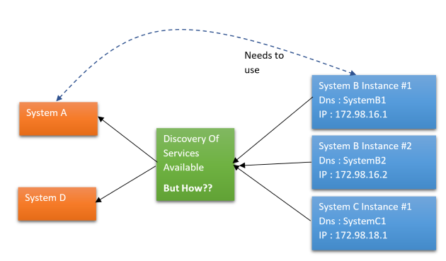
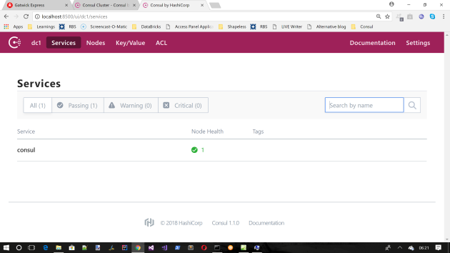
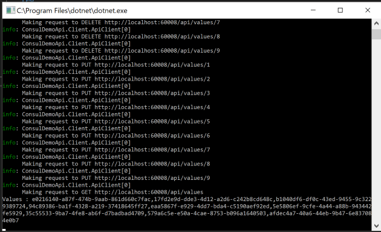
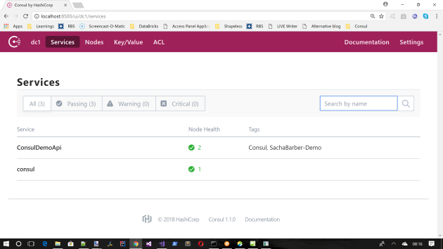
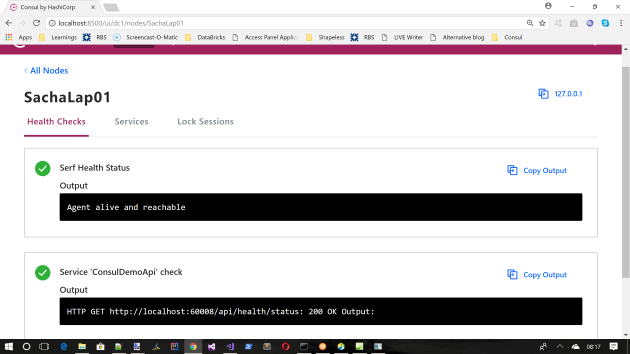
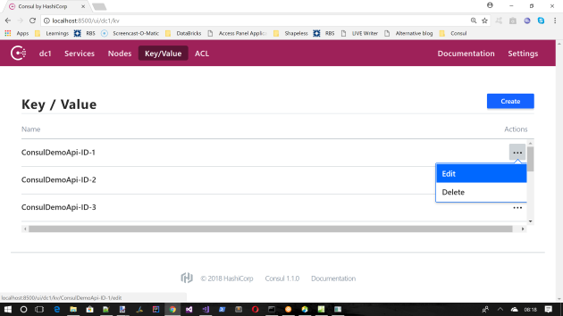
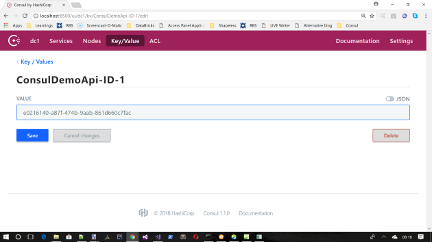

Are Madonna once said "we are living in a micro services world". Ok she didn't quite say that, but what does she know. We ARE living in a micro services world.
If you are currently doing/have done microservices you will know that one of
the trickier elements to this is "Service Discovery". This article will briefly
talk about some existing solutions to this, and will spend the rest of the
article talking about on particular framework for aiding in this area called "Consul".
So what is the problem exactly. Lets consider this image

Say we have a bunch of services out in the wild SystemB/SystemC in this example, and we have other services (or UIs) SystemA/SystemD in this example, that want to make use of the existsing services. However in order to do that we need to know where these existing services live, or make some assumptions about their DNS names that should be long lived. This the act of "discovery", and is essentially what the rest of this article will focus on.
There are quite a few frameworks that may aid in the development of "discovery" mechanisms
Zookeeper has server nodes that require a quorum of nodes to operate (usually a simple majority). They are strongly-consistent and expose various primitives that can be used through client libraries within applications to build complex distributed systems. The problem with this, is that while it offers absolute freedom its all down to you to do/build.
You could use Redis cache to be used by services to store meta data, and then a consumer could query the cache. However to make this resilient you really need some form of clustering, and some consensus/gossip to achieve consistency. This is fairly hard so most people just cut corners and make this a singleton, which is obviously a single point of failure.
Kubernetes does a good job of "Disvovery" by way of Services/DNS addon/pods all of which can easily be load balanced (providing you're using a cloud hosted Kubernetes). I have written about this before, so if you are interested you can read more here : https://sachabarbs.wordpress.com/kubernetes-series/
This is a great solution, providing your stuff is running in containers (prefferably in a cloud environment)
Consul (to my mind) is the only tool/framework that tackles
"discovery" head on, and actually provides a rich tool that does that this job,
and does it well, with little effort from the developer. This page is actually a
pretty good read of the comparisons between Consul and others :
https://www.consul.io/intro/vs/index.html
For the remainder of the article I will be concentrating on Consul
So before we get into the demo app, lets just spend a bit of time talking
about what Consul is, who created it, and why I think it's ace.
Consul was created by Hashicorp, who are the same team that made
Vagrant (which is a awesome VM registry system,). Hashicorp know what they are
doing, they have a proven track record of great products. So yes you can trust
them, they have your back.
The main points of Consul are these
Consul to create your own client side
leader election. See here for more information :
https://www.consul.io/docs/guides/leader-election.html, and also refer
to the relevant Client library for the exact language example that you needAt is heart Consul is expecting you to set you to set up a
cluster where there is a gossip protocol in place between the cluster nodes.
Consul uses Serf
(see
https://www.consul.io/docs/internals/gossip.html, btw Serf is another
Hashicorp product) to handle the gossiping. Essentially there will some form of
consensus/leadship/consistency/replication that is handled by the gossiping
between nodes, this is what will give it the reliability.
Consul as stated above exposes a REST API/Go client to allow you
get your own services/KeyValues/ACLs into the Consul machinery. You
can totally use these REST APIs/Go client no problem, there are however a great
number of community based clients that wrap the Consul REST APIs
for you, so it may be worth having a look at these.
You can see the full list of clients here : https://www.consul.io/api/libraries-and-sdks.html
If you are running a Consul agent you should be able to get to a
web dashboard which should look like this out of the box (NOTE that I have
created the following environment variable CONSUL_UI_BETA wihch is
set to true, to use the "new UI")
Navigate to http:localhost:8500

This web UI allows you to see the following
We will look at this web app again, once I show you how to use
Consul.NET, to self register with Consul
As stated above there are many Consul REST wrappers, but I chose to show the .NET one, which uses Consul.NET, it is a .NET Core 2.0 WebAPI and simple Console app client
The demo app does the following things:
ConsulConsulConsulKeyValue storeConsulCatalog to discover
services
Although Consul.NET is available via NuGet its probably still good to familiarise yourself with the tests/API, which you can read about at its GitHub repo.
You can grab the code for this article from my repo : https://github.com/sachabarber/ConsulDemo, once you download that just do the following 2 things:
consul.exe
and issue this command consul agent -dev. This will start a
single node to try stuff out against. This data will not survive a Consulrestart. As such this is obviously not fit for production, its
just so you can try stuff out. Teaching you about clusters is outside the
scope of this article, please just refer to the docs for that :
https://www.consul.io/intro/getting-started/join.htmlConsulDemoApi, just wait for the API page to launch in a brwoser and show an empty JSON array response (this is the starting point for the demo app, the client will provide some items when it discovers and uses the API)ConsulDemoApi.Client, once you are sure the API is running, press a key in the clients console to allow to to discover and use the API via
ConsulThat is all there is to it
The example API could be anything to be fair, its more about how to register it with Consul. However I kind of wanted to also show how to use the Consul KeyValue store, so have gone for a simple .NET Core 2.0 WebApi project, which has 2 controllers
ValuesController : Which is a simple controller that
expects to PUT/GET/DELETE items from the Consul KeyValue storeHealthController : This is used by the Consul
health check associated with the registration of this overall service with Consul This is the entire code for the ValuesController which I think
is fairly self explanatory. The Consul KeyValue store is that easy
to use via
Consul.NET
using System;
using System.Collections.Generic;
using System.Text;
using System.Threading.Tasks;
using Consul;
using Microsoft.AspNetCore.Mvc;
using Newtonsoft.Json.Linq;
namespace ConsulDemoApi.Controllers
{
[Produces("application/json")]
[Route("api/[controller]")]
public class ValuesController : Controller
{
private Func<IConsulClient> _consulClientFactory;
public ValuesController(Func<IConsulClient> consulClientFactory)
{
_consulClientFactory = consulClientFactory;
}
// GET api/values
[HttpGet]
public async Task<IEnumerable<string>> Get()
{
using (var client = _consulClientFactory())
{
var queryResult = await client.KV.List("ConsulDemoApi-ID-");
if (queryResult.StatusCode == System.Net.HttpStatusCode.OK)
{
List<string> finalResults = new List<string>();
foreach (var matchedPair in queryResult.Response)
{
finalResults.Add(Encoding.UTF8.GetString(matchedPair.Value, 0,
matchedPair.Value.Length));
}
return finalResults;
}
return new string[0];
}
}
// GET api/values/5
[HttpGet("{id}")]
public async Task<string> Get(int id)
{
using (var client = _consulClientFactory())
{
var getPair = await client.KV.Get($"ConsulDemoApi-ID-{id.ToString()}");
return Encoding.UTF8.GetString(getPair.Response.Value, 0,
getPair.Response.Value.Length);
}
}
// PUT api/values/5
[HttpPut("{id}")]
public async Task Put(int id, [FromBody]JObject jsonData)
{
using ( var client = _consulClientFactory())
{
var jsonValue = jsonData["Value"].ToString();
var putPair = new KVPair($"ConsulDemoApi-ID-{id.ToString()}")
{
Value = Encoding.UTF8.GetBytes(jsonValue)
};
await client.KV.Put(putPair);
}
}
// DELETE api/values/5
[HttpDelete("{id}")]
public async Task Delete(int id)
{
using (var client = _consulClientFactory())
{
await client.KV.Delete($"ConsulDemoApi-ID-{id.ToString()}");
}
}
}
}
There honestly is not much more to say about this controller, its simple REST over the KeyValue store.
Ok so now that we have an API, we would like to register it with Consul.
This is the good stuff. Lets see how we do that
It roughly breaks down to these steps (remember I am using .NET Core 2.0, so this may vary for you if that is not what you are using)
This is my minimal appsettings.json file for my local Consul
{
"ConsulConfig": {
"Address": "http://127.0.0.1:8500",
"ServiceName": "ConsulDemoApi",
"ServiceID": "ConsulDemoApi-v1"
}
}
See how this contains a service name / ID (ID MUST be unique)
The next step is to register the service. There are many ways to do this, but .NET Core 2.0 comes with this neat iterface IHostedService which
allows me to register start up tasks with the http pipeline.
So its simply a matter of adding some registration code in an IHostedService
implementation. Here is the demo app one
using System;
using System.Linq;
using System.Threading;
using System.Threading.Tasks;
using Consul;
using ConsulDemoApi.Config;
using Microsoft.AspNetCore.Hosting.Server;
using Microsoft.AspNetCore.Hosting.Server.Features;
using Microsoft.Extensions.Hosting;
using Microsoft.Extensions.Logging;
using Microsoft.Extensions.Options;
namespace ConsulDemoApi.Services
{
public class ConsulHostedService : IHostedService
{
private Task _executingTask;
private CancellationTokenSource _cts;
private readonly IConsulClient _consulClient;
private readonly IOptions<ConsulConfig> _consulConfig;
private readonly ILogger<ConsulHostedService> _logger;
private readonly IServer _server;
private string _registrationID;
public ConsulHostedService(
IConsulClient consulClient,
IOptions<ConsulConfig> consulConfig,
ILogger<ConsulHostedService> logger,
IServer server)
{
_server = server;
_logger = logger;
_consulConfig = consulConfig;
_consulClient = consulClient;
}
public async Task StartAsync(CancellationToken cancellationToken)
{
// Create a linked token so we can trigger cancellation outside of this token's cancellation
_cts = CancellationTokenSource.CreateLinkedTokenSource(cancellationToken);
var features = _server.Features;
var addresses = features.Get<IServerAddressesFeature>();
var address = addresses.Addresses.First();
var uri = new Uri(address);
_registrationID = $"{_consulConfig.Value.ServiceID}-{60008}";
var registration = new AgentServiceRegistration()
{
ID = _registrationID,
Name = _consulConfig.Value.ServiceName,
Address = $"{uri.Scheme}://{uri.Host}",
Port = 60008,
Tags = new[] { "Consul", "SachaBarber-Demo" },
Check = new AgentServiceCheck()
{
HTTP = $"{uri.Scheme}://{uri.Host}:60008/api/health/status",
Timeout = TimeSpan.FromSeconds(3),
Interval = TimeSpan.FromSeconds(10)
}
};
_logger.LogInformation("Registering in Consul");
await _consulClient.Agent.ServiceDeregister(registration.ID, _cts.Token);
await _consulClient.Agent.ServiceRegister(registration, _cts.Token);
}
public async Task StopAsync(CancellationToken cancellationToken)
{
_cts.Cancel();
_logger.LogInformation("Deregistering from Consul");
try
{
await _consulClient.Agent.ServiceDeregister(_registrationID, cancellationToken);
}
catch (Exception ex)
{
_logger.LogError(ex, $"Deregisteration failed");
}
}
}
}
The main point of the code is obviously to register THIS service with Consul.
So make sure you understand the register section in the code above. The
most important point I think is also how extra metadata is associated with the
registration, this allows a consumer to query using this metadata without
knowing anything about the actual endpoint (which is what we are trying to
ascertain after all), we simple go "I want all services called
'ConsulDemoApi'", and we would get a response of all such tags services
registered with Consul, which would include the endpoint information for the service in the response, which may then be used by the calling consumer.
See
how the registration also includes a Check Consul comes with many
flavors of Check and this is just one that will call a REST
endpoint, in this case one that is part of this app the HealthController which looks like this
using Microsoft.AspNetCore.Mvc;
namespace ConsulDemoApi.Controllers
{
[Route("api/[controller]")]
public class HealthController : Controller
{
[HttpGet("status")]
public IActionResult Status() => Ok();
}
}
For a full list of the different types of Check available read here : https://www.consul.io/docs/agent/checks.html
The final step is to ensure the correct services are registered in the IOC container (this may vary depending on your setup)
Since I am using .NET Core 2.0 WebAPI, for the demo app this is done as
follows in Startup.cs
public void ConfigureServices(IServiceCollection services)
{
services.AddSingleton>IHostedService, ConsulHostedService>();
services.Configure>ConsulConfig>(Configuration.GetSection("ConsulConfig"));
services.AddSingleton>IConsulClient, ConsulClient>(p => new ConsulClient(consulConfig =>
{
var address = Configuration["ConsulConfig:Address"];
consulConfig.Address = new Uri(address);
}));
services.AddSingleton>Func>IConsulClient>>(p => () => new ConsulClient(consulConfig =>
{
var address = Configuration["ConsulConfig:Address"];
consulConfig.Address = new Uri(address);
}));
.....
}
So the example client is a simple .NET core 2.0 Console app that does the following:
Consul query mechanism
(where we use metadata about the service we want to discover and use)
The hard part (well its actually quite easy) is to discover the services that match a given set of metadata. This is done as follows:
private readonly List<Uri> _serverUrls;
public async Task Initialize()
{
var consulClient = new ConsulClient(c =>
{
var uri = new Uri(_configuration["ConsulConfig:Address"]);
c.Address = uri;
});
_logger.LogInformation("Discovering Services from Consul.");
var services = await consulClient.Agent.Services();
foreach (var service in services.Response)
{
var isDemoApi = service.Value.Tags.Any(t => t == "Consul") &&
service.Value.Tags.Any(t => t == "SachaBarber-Demo");
if (isDemoApi)
{
var serviceUri = new Uri($"{service.Value.Address}:{service.Value.Port}");
_serverUrls.Add(serviceUri);
}
}
....
}
See how we use the Tags to provide a predicate for the search. Then we simply store the endpoint information that matches that query into a list so we can then use the discovered services later
One neat trick here is that we can make use of the Polly retry library, such that after a certain amount of retries we could switch over to the next service that we discovered. This is quite common in trading apps, where there might be loads of price streaming services and if one dies we go to the next.
serverRetryPolicy = Policy.Handle<HttpRequestException>()
.RetryAsync(retries, (exception, retryCount) =>
{
ChooseNextServer(retryCount);
});
private void ChooseNextServer(int retryCount)
{
if (retryCount % 2 == 0)
{
_logger.LogWarning("Trying next server... \n");
_currentConfigIndex++;
if (_currentConfigIndex > _serverUrls.Count - 1)
_currentConfigIndex = 0;
}
}
Then for the calls to use the discovered service we can simply use the curent "working" service endpoint informaton
public Task<bool> DeleteValueAsync(int id)
{
return _serverRetryPolicy.ExecuteAsync(async () =>
{
var serverUrl = _serverUrls[_currentConfigIndex];
var requestPath = $"{serverUrl}api/values/{id}";
_logger.LogInformation($"Making request to DELETE {requestPath}");
var response = await _apiClient.DeleteAsync(requestPath).ConfigureAwait(false);
return response.IsSuccessStatusCode;
});
}
Now that we have a demo app, and we have started Consul (from
command line consul agent -dev) we can let it run and have a look
at the Consul web UI again
First ensure you have started Consul and run both the demo app projects, you should see output like this

Then lets launch the Consul web app again, we can now see our
registered service (remember the -dev flag on Consul
starts a NON persisted Consul single node cluster, so you will not
see anything after a machine restart)

We can drill into our new service registration, and we see our health check is working too

We also made use of the KeyValue store, so lets see that

Where we can also look at one of the values

Yay its all working just as we want it to. And that ladies and gents is a wrap.
Consul is a dream to use, and if you have not done so already you should really take a look. Its awesome